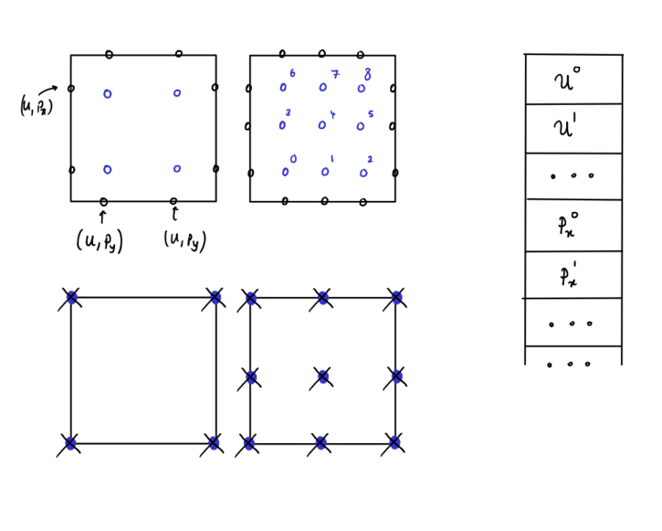
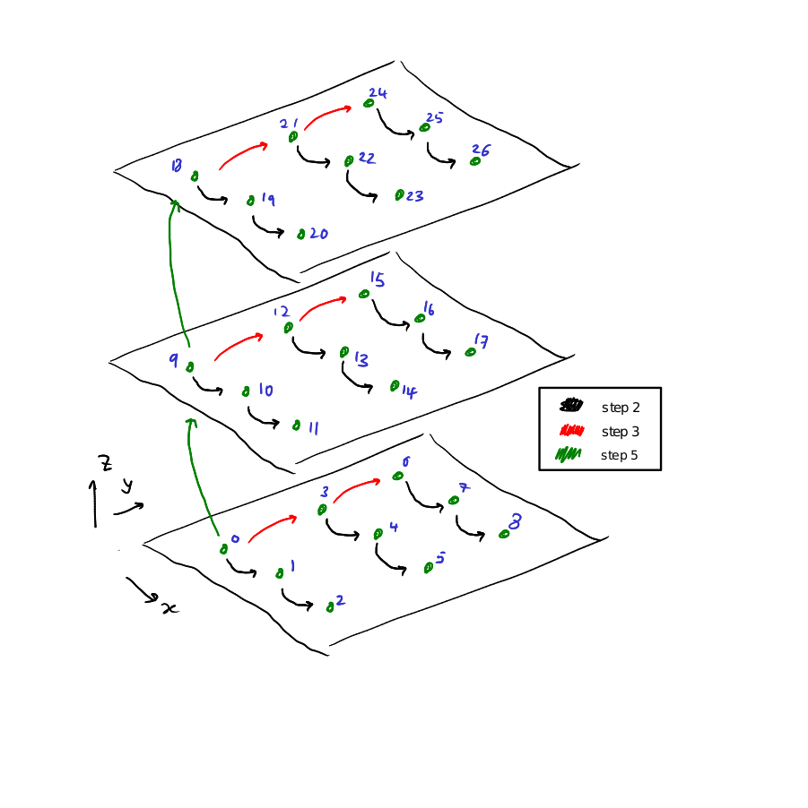
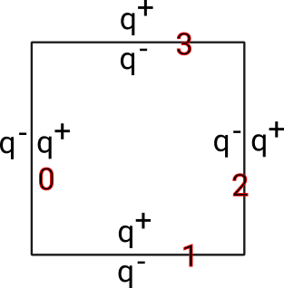

In all of our methods, we work with Lagrangian polynomials. The solution results from a linear combination of weighted polynomials spanning function spaces. The weights determine the continuous solution. We have quite some freedom how to arrange the weights geometrically and to pick polynomials. The sketch below depits a Gauss-Legendre (left) and Gauss-Lobatto (right) arrangement. We also note that in general, we store variables one after another, ie we store the values for \( u \) for each node on the facet, then each value for \( p_x \) etc.

We refer to the points which host weights of Lagrangian polynomials as nodes. Each node can hold multiple unknowns which are weights of the shape functions.
If we look at one cell, the number of nodes times the number of unknowns defines the total number of degrees of freedom (DoFs) within the system. We frequently also introduce function spaces on facets and vertices. Those guys have their own nodes and unknowns. It really depends on the numerical scheme if the resulting weights are real degrees of freedom or sole helpers.
We note that for Lobatto, some cell nodes coincide spatially with the faces. However, we hold all the data within the cells (from a data structure point of view). As we store all the unknowns of all degrees of freedom per cell in one huge array per cell, we end up with an array of doubles of size \( K (p+1)^d \), \( K \) being the number of unknowns per cell node and \( p \) denoting the polynomial order.
A solver in Peano has a unique geometric layout of its nodes, and each and every node holds the same number of unknowns (though some solvers allow you to change the number of unknowns held by cells, facets and vertices). If you need different node layouts (polynomial orders), you can combine various solvers with different layouts. The overall philosophy is to keep things simple as building blocks, which users can assemble into more complex code setups. An alternative approach would have been to write one generic, monolithic solver with a lot of features which cover all eventualities and then can be specialised.
Enumeration Order
Here we provide some details on the way Peano enumerates its vertices and faces. It is an enumeration pattern that works in any number of dimensions. In many situations that we aim to solve, each of our faces and cells will have multiple degrees of freedom upon them, and we shall reuse this enumeration order to allow users to figure out their spatial ordering.
Vertex Enumeration
First we describe how the vertices are enumerated in 2D and 3D, before describing how we reuse this pattern in higher dimensions.
See:
Our general pattern is:
- x axis, y axis then z axis, greedily assigning indices until each axis is saturated
- Left, bottom and then front first
We describe this pattern, first in 2D. Let our vertices lie in the (x,y) plane. Assign vertices as follows:
- We assign index 0 to the vertex which has the "most negative" x and y coordinates, ie the vertex in the bottom left
- We then move along the x axis, assigning indices until this axis is saturated (ie we move to the right, and assign index 1). We then return to the vertex at which we began at the start of this step.
- We then take one step along the y axis, assigning index 2.
- We repeat step 2, until this axis is saturated (ie, move to the right and assign index 3). Return to the index where we began this step.
In 2D we are now done.
In 3D, it's much the same. We undertake steps 1-4 as above, before returning to vertex 0. Then, take a step in the z direction, and repeat steps 1-4 again.
Note that if we have some 4th dimension w, all we need to do is repeat these steps again along this dimension, greedily assigning indices along the x axis first, and then the y axis etc.
This pattern is exactly the same as described in peano4::datamanagement::VertexEnumerator.
Face Enumeration
The face enumeration follows peano4::datamanagement::FaceEnumerator.
We proceed with a similar pattern to vertices, except we use the direction of the normal of a face plus the left/right decision as primary metric. First, we assign the index 0 to the face whose unit normal points in the negative x direction. We assign the next index to the face whose unit normal points in the negative y direction, before assigning the next to the face that points in the negative z direction.
Following this, we assign subsequent indices to the faces who unit normal vectors point in the positive x, y and then z directions. This extends to any number of dimensions, as long as the dimensions are strictly ordered (x, y, z, etc)
Degree of freedom enumeration on cells
Here we once again have a similar pattern.
- Start with the DoF that is positioned with the most negative (x,y,z) coordinates.
- Move along the x axis, assigning indices until saturated. Once complete, return to the index first encountered at the start of this step.
- Take one step along the y axis, and repeat step 2. Once complete, return to the index first encountered at the start of this step.
- Repeat steps 2 and 3 until the (x,y) plane of this layer is saturated.
- Return to where we began. Take one step in the z direction, and repeat steps 2-4 until saturated.
The final product should look something like this:

Degree of freedom enumeration on faces
Faces usually hold three types of unknowns:
- Left projections (left along the respective Cartesian coordinate axis parallel to the face's normal);
- Right projections;
- Solutions to a flux formulation or averages.
All the data on a face are organised in one big memory chunk per face. The first part of this chunk holds left data, the next one right data, and finally the third type of information. Left and right data chunk have the same size.

Mathematical notation
Reserved letters
- \( d \in \{2,3\} \) is the dimension of the spatial problem.
- \( p \geq 0 \) denotes a polynomial order.
Symbols
- Constants are written as uppercase letters such as \( K \). Usually, they are scalars. An exceptions to this rule is \( \omega >0 \) which we use in line with popular literature as damping/relaxation factor.
- Lowercase letters such as \( u \) denote a function if they are used within a PDE, or weights within a degree of freedom if they are used within a matrix equation. It depends on the context is they are scalar PDEs or vector-valued PDEs or scalars or weight vectors, respectively, i.e. we do not use any syntax to highlight such a distinction. Our most popular choices for these guys are \( u \) and \( p \).
- If we introduce "artificial" solver spaces/functions, we typically use Greek letters \( \lambda, \varphi, \cdots \). These are proper functions. They just do not appear in the original problem formulation (PDE).
- Matrices are written with uppercase symbols and bold, i.e.~ \( \mathbf{A} \) or \( \mathbf{P} \). The bold type distinguishes them from constants.
- Usually, we use \( \mathbf{A} \) for system matrices (acting on some unknowns), \( \mathbf{P} \) for projection matrices (mapping one set of unknowns onto another one) and \( \mathbf{M} \) for matrices acting on other quantities. The choice of \( \mathbf{M} \) is inspired by the term mass matrix, which we traditionally find on the right-hand side.
- Partial differential operators are written as \( \mathcal{L} \) or \( \mathcal{A} \) or similar, unless there are well-established symbols such as \( \nabla \) or \( \Delta \). The most frequently used identifiers are \( \mathcal{L} \) for the linear(ised) operator within the PDE, and \( \mathcal{R} \) as generic symbol for a Riemann solver.
- If we have to deal with individual shape/trial functions, we abstain from Greek letters ( \( \phi, \psi \) and \( \varphi \) are frequently found in literature) but instead favour \( v, q, \dots \).
- We write integrators as \( \int ... d\boldsymbol{x} \) and surface integrals as \( \int ... d\boldsymbol{x} \).
Specifiers
Often, symbols are subject to some further clarification or additional specification:
- To highlight that a matrix or function acts on a cell or face, we use a superscript \( ^c \) or \( ^f \) respectively. \( u^c \) consequently denotes a function or weights, but the superscript highlights that they live on cells only.
- If we have a projection (or literally any matrix/operator) and want to highlight from where to where it maps, we write this as \( P_{f \gets c} \). This projection \( P \) takes a cell representation and yields a face representation.
- A bar over a letter is used to distinguish between a function and a finite set of its values in the context of discretization. For example, if \( u = u(x,y) \) is a function defined on a 2D domain, \( \bar{u} \) can be used to denote a set of nodal values of \( u(x,y) \). (or should we use \( \textbf{u} \) insted?)
Function manipulators
- If we have a face where a function \( u \) does not exist, but there is a valid \( u \) left and right, \( u^- \) denotes this left function, while \( u^+ \) denotes the right one.
- The modifier \( \hat{u} \) or \( \widehat{ \nabla u} \) on a function denotes that this function does not exist at the point where we evaluate it. However, there is are two valid function values - typically left and right - and this is the average.
- Square double brackets denote the jump between two values: \( [\![ u ]\!] = u^- - u^+ \)
- Curly brackets denote the average values: \( \{ u \} = \left( u^- + u^+ \right) / 2 \)
- If a function lives on a cell, but we evaluate it only along the face, we use \( u|_f \). This means that we don't project it. We literally evaluate it. In this sense \( u^+ = u_c|_f \) where the \( u_c \) is the solution over the right adjacent cell of a face.
Operator notation
Face to cell (or "cell from face")
When you project from the faces to the cell data, you will get 2d chunks of face data which are dumped into one big array. All the data is then projected in one rush into the cells. If both the cell and the face hold \( p+1 \) unknows per coordinate axis, and each cell node (cmp the generic multigrid terminology) holds \( K^c \) unknowns, while each face node holds \( K^f \) unknowns, the projection is formalised through
\(
x^c = P_{c \leftarrow f} x^f
\)
with \( P_{c \leftarrow f} \in \mathbb{R} ^{ K^c(p+1)^d \times 2dK^f(p+1)^{d-1} } \). The chunks within the \( 2dK^f(p+1)^{d-1} \) vector on the right are grouped following the face enumeration convention from above.
Cell to face (or "face from cell")
When you project from a cell to its faces, you use
\(
x^\pm = P_{f \leftarrow c} x^c
\)
with \( P_{f \leftarrow c} \in \mathbb{R} ^{ 2dK^f(p+1)^{d-1} \times K^c(p+1)^d } \). This time, the \( 2d \) chunks within the left-hand vector are either the \( x^+ \) or the \( x^- \) quantities on the cell, i.e. left or right projections. It is Peano's multigrid backend which has to ensure that you see only those chunks that are visible "from within the cell".
Face-face operation
When you phrase operations on the faces, you typically get the left and the right projection in and you return an approximation of either the flux or the real value along the face. Conceptually, we often write this as
\(
x^f = A_{ff} \begin{bmatrix} x^- \\ x^+ \end{bmatrix}
\)